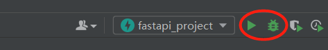

TreeviewCopyright © qgao 2021-* all right reserved, powered by aleen42
运行项目
1 初始文件内容
main.py：
from fastapi import FastAPI
app = FastAPI()
@app.get("/")
async def root():
return {"message": "Hello World"}
@app.get("/hello/{name}")
async def say_hello(name: str):
return {"message": f"Hello {name}"}
test_main.http：
# Test your FastAPI endpoints
GET http://127.0.0.1:8000/
Accept: application/json
###
GET http://127.0.0.1:8000/hello/User
Accept: application/json
2 启动项目
- 可以像这样进入虚拟环境输入命令启动项目：
D:\study\pycharm_saving\fastapi_project>.\venv\Scripts\activate.bat
(venv) D:\study\pycharm_saving\fastapi_project>uvicorn main:app --reload
[32mINFO[0m: Will watch for changes in these directories: ['D:\\study\\pycharm_saving\\fastapi_project']
[32mINFO[0m: Uvicorn running on [1mhttp://127.0.0.1:8000[0m (Press CTRL+C to quit)
[32mINFO[0m: Started reloader process [[36m[1m19300[0m] using [36m[1mWatchFiles[0m
[32mINFO[0m: Started server process [[36m26720[0m]
[32mINFO[0m: Waiting for application startup.
[32mINFO[0m: Application startup complete.
- 也可以直接pycharm启动（本质就是输的上方的命令）：

最后，直接访问 http://127.0.0.1:8000 即可